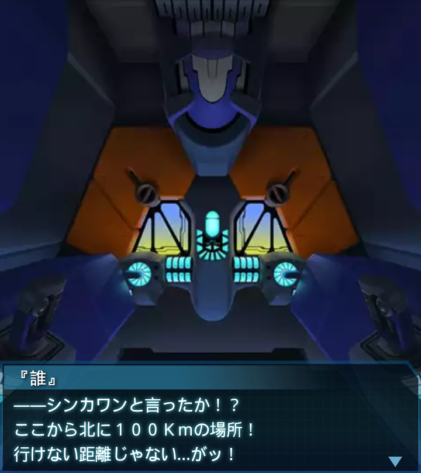
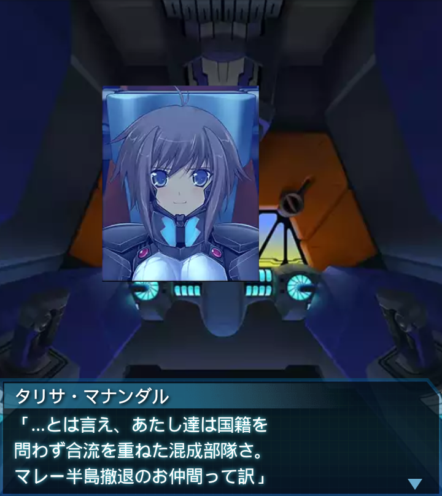

インドネシア・シンカワン1
『誰』
「――ッ！？な、何だ…
オープン回線で通信が――！？」
ノイズ
『こちら……ＢＥＴＡ…戦中！
付近…いないか！？救援…請…！
シンカワン…で……交戦中！』

『誰』
――シンカワンと言ったか！？
ここから北に１００Ｋｍの場所！
行けない距離じゃない…がッ！
『誰』
俺達は既に…燃料も装備も
底をつきかけている――いや！
『誰』
それでもこれを見捨てることは
俺には出来ない！尽きかけて
いるのは人類そのものなんだ！
『誰』
救える命を救わなければ、俺達は
何のために戦うというんだ…。
『誰』
綺麗事だというのはわかってる。
だけど――
『誰』
「全機緊急出撃！救援要請受託！
絶対に助け出すんだッ！！」

『誰』
「はあ…はあ…はあ…
お、終わった…のか？」
タリサ・マナンダル
「あんた助かったよ。あたしは
タリサ・マナンダル少尉。所属は
ネパール軍だ」

タリサ・マナンダル
「…とは言え、あたし達は国籍を
問わず合流を重ねた混成部隊さ。
マレー半島撤退のお仲間って訳」
タリサ・マナンダル
「みんな、長い間の撤退戦で
戦術機も強化装備も借り物でさ、
細かな動きができなくてね」
タリサ・マナンダル
「そこに今回の戦闘だったから、
正直もう駄目かと思ってた。
ホント、サンキューな！」
『誰』
「そうか…俺は『誰』。
人類防衛機構軍特務大尉だ。
だけど間に合ってよかった…」
タリサ・マナンダル
「え――た、大尉ィッ！？
や、あ、あの――
し、失礼しましたーー！！！」
『誰』
「ははは、気にしなくていいよ」
『誰』
「それはそうと、状況を説明
してくれないか？ＢＥＴＡが海を
渡ってきた理由を…」
タリサ・マナンダル
「自分達はスマトラ島で奴らが
群がる奇妙な研究施設を発見し、
これを破壊したものの――」
タリサ・マナンダル
「奴らは蜘蛛の子を散らすように
四方に離散、その一部に押されて
渡海を余儀なくされました」
『誰』
「研究施設を破壊…！？
スマトラ島にもあったのか…」

『誰』
「わかった。間もなく我が軍の
増援が到着する。詳しい話は
収容後に聞かせてくれ」